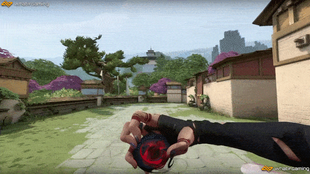
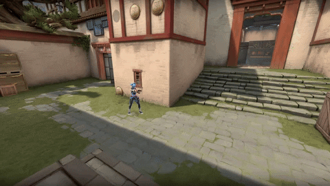
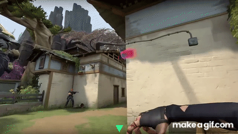
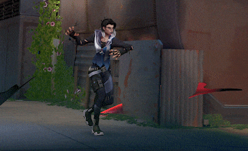

Esta página web muestra diferentes elementos multimedia relacionados con el personaje Fade de Valorant. El objetivo es practicar la inserción de archivos de video, GIF y audio en HTML utilizando rutas relativas.
Fade es una agente de tipo Iniciador originaria de Turquía. Su estilo se centra en revelar y controlar la posición de los enemigos mediante habilidades de vigilancia y daño en áreas.
Fade es estratégica, ideal para jugadores que disfrutan controlando el mapa y facilitando entradas seguras para su equipo.
Invoca un pequeño espectro que rastrea y daña a los enemigos.

Lanza un orbe que inmoviliza y revela a los enemigos atrapados.

Marca a los enemigos cercanos, revelando su ubicación.

Desata una ola de sombras que ciega y daña a todos los enemigos en su alcance.
